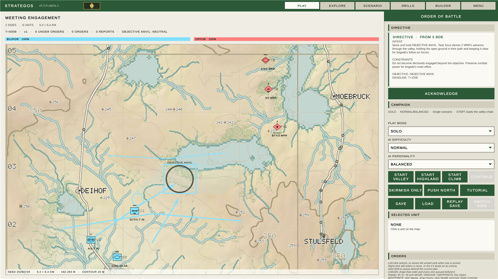
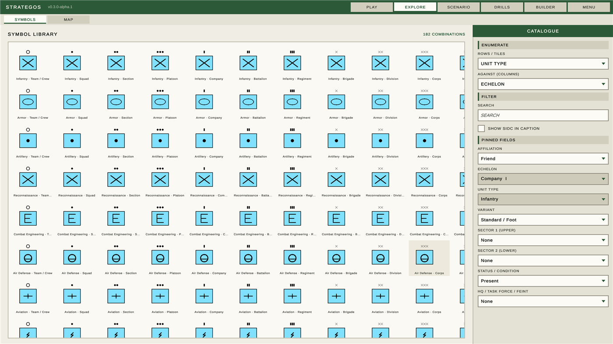

What this is
Strategos is a tactical command simulation game built around topographic maps, NATO APP-6D symbology, multi-echelon command, and adaptive AI. The player can grow from commanding a fireteam to controlling a theater-level combatant command.
This page is a status report, not a pitch. The project is mid-build: some systems are
finished, one is actively in progress, and most of the roadmap hasn't started. That's
stated plainly below, section by section. See what's planned
for what comes next, or concepts for the design principles
the code actually follows. To try the sandbox yourself,
download the Windows alpha
(unzip and run Strategos.exe).

What's actually built
Phase 2 (the symbol system) is complete; Phase 1's map system is largely built. The map has a data model, a generation pipeline, a 2D topographic renderer and a 3D drape (a heightfield mesh textured with the 2D sheet). The app is a tab shell over five views: PLAY (a loaded scenario you can command), EXPLORE (a symbol-library browser and a pannable, zoomable map inspector), SCENARIO (map settings with a 2D or 3D preview), DRILLS (the TTP binder, read-only) and BUILDER (the digit-by-digit symbol composer).
The sandbox is playable and units can fight. A scenario loads two sides onto generated terrain; units have capabilities and state; a fixed-step simulation carries orders down a command topic into per-unit queues, moves units by terrain-cost A*, resolves direct fire between them, and carries reports back up a situation topic. Select, order, engage, queue, abort and time compression all work; the live plan is listed order by order and can be cut at any entry; and the whole run is deterministic and replayable from the command log.
- Hold is a real order — a unit told to hold digs in over two minutes and takes half the incoming fire once it has.
- The ORBAT is a tree — a formation is a unit that owns subordinates, its state rolls up from them, and an order addressed to it decomposes one echelon per step.
- Command rank is a shoulder board — the shell shows insignia derived from the echelon the player commands (US / Soviet ladders), not a free-floating rank setting.
- Drills are readiness-aware — the PLAY picker annotates each drill T/P/U for the selected unit, matching the DRILLS binder.
- Units tire and units are green — training costs time before an order is acted on, fatigue costs capability and recovers with rest.
- A destroyed unit becomes a wreck that is neither commandable nor a contact, and the loss is recorded.
- The map pans and zooms, bounded by the echelon the player commands.
- Units also fight on their own initiative under rules of engagement, answer fire while marching, and withdraw when they are being destroyed. A green unit hesitates before acting on an order and is slower to report what it sees, so its commander works from an older picture.
Recent changes
Highlights since the sandbox milestone. Full notes live in CHANGELOG.md.
- 2026-08-05 — v0.3.0-alpha.1 — first tagged GitHub Release with a Windows player zip; version stamped into the build and shown in the top bar; front-door menu (splash, fit-height two-column layout, EXIT). Climb campaign seat ladder and Steamworks stub seam also landed.
- Earlier — mission-type orders complete (Screen through Pursue); campaign play starts / continues / mid-campaign-saves from PLAY; waypoints; armed MOVE/ENGAGE palette; audio beds and procedural SFX; display prefs; tutorial first beat.
- 2026-08-03 — Command-rank shoulder insignia; drill dropdown T/P/U; Pages OG meta and GitHub CTA; cancel/pause command fixes.
- 2026-08-02 — Save/load a run; campaign chain carry-over (data); directives from higher; AI policy seam.
- 2026-08-01 — Drill execution; Hold dig-in; formation tree; fatigue; wrecks; shipped-map objective fix.

What isn't there yet
There is still no world in the 3D sense: the drape is a preview rendered into a UI card, not a playable space, and there is no game camera. Units still pass through each other — there is no collision, no zone of control and no facing. A destroyed unit becomes a wreck (not commandable, not a contact) and the loss is logged; reconstitution between operations is still open. Reflexes and a side-policy seam are not intelligence — nothing plans or manoeuvres yet. Indirect fire, logistics, terrain LOS and online play remain unbuilt.
See what's planned for the full phase-by-phase state and the near-term focus.